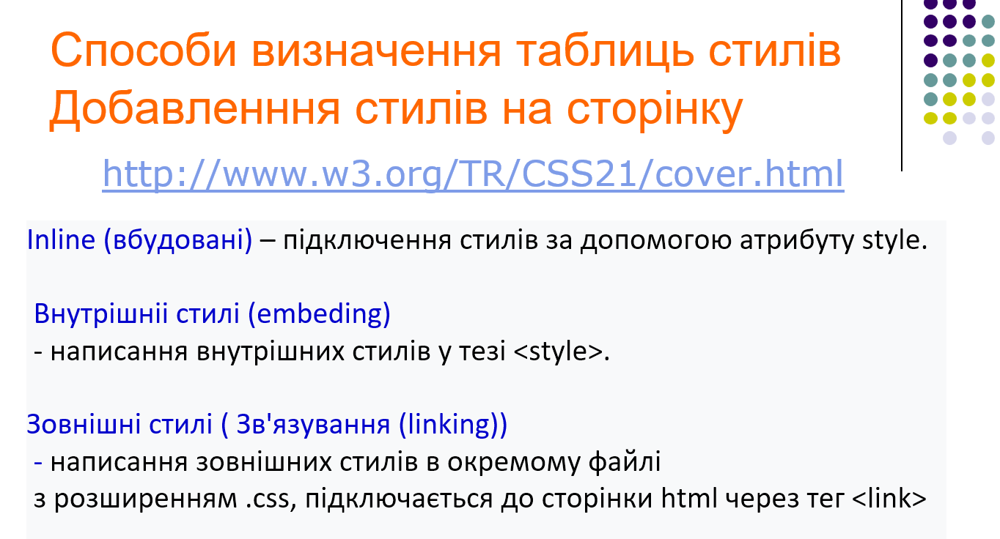
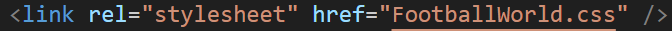

Звіти лабораторних робіт
З дисципліни "Інтернет-технології та проєктування WEB-застосувань"
Студента групи ІС-31 Сичова Артема
| Лабораторна Робота №1 |
Лабораторна Робота №2 |
Лабораторна Робота №3 |
Лабораторна Робота №4 |
Лабораторна Робота №5 |
Лабораторна Робота №6 |
Лабораторна Робота №7 |
Лабораторна Робота №8 |
Лабораторна Робота №9 |
| Тема. Мета. Місце розташування ЛР №2 |
 У своїй лабораторній роботі я використовував зовнішній спосіб підключення стилів.  |
| Способи підключення стилів | |
| СЕЛЕКТОРИ | |
| Селектор тегу | |
| Селектор класу | |
| Селектор ідентифікаторів | |
| Інші селектори | |
| CSS: Шрифти Текст Таблиці Фон Контур Списки СSS Просунутий | |
| Висновки |